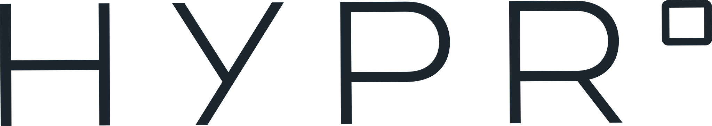

Wf · webMarque onde você está na planta e o navegador mede a rede em cada ponto. Ou abra um mapa feito no app.

Cada quadrado da grade vale 1 m. Use como rascunho da casa.
Toque em dois pontos da planta cuja distância real você conhece (uma parede, por exemplo).
Vá até um ponto da casa, toque no lugar correspondente da planta e espere a medição terminar antes de andar.